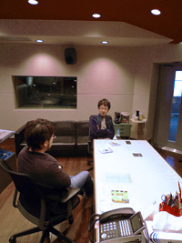
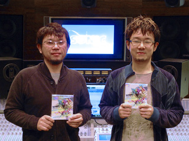
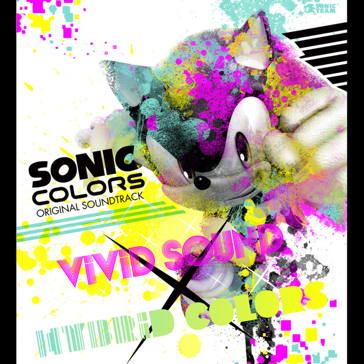

もの凄いボリュームですが、一つ一つの制作に色々な由来があることがわかりますね。それでは、今作の制作をするにあたって特に苦労された点や、記憶に残る出来事などはありましたか？

床井： ソニックシリーズの音楽は、ファンの皆様に代々ご支持頂いておりますので、裏切ってはいけない思いから、個人的にナーバスになった時期もありました。でも、つねにワクワクする曲を作りたいという思いが、ソニックの音楽として新しい事にチャレンジするパワーとなったのかなと思います。テーマ曲も然ることながら、ステージ曲に費やした時間は、二人とも今までで一番長かったんじゃないでしょうか。技術ではフォロー出来ないものと言いますか、アクションを楽しみたいといった思いを、それぞれのステージごとに、答えが出るまで時間を掛けて制作しています。それこそアップデートはファイナルまで行っていましたね。結果的に、ステージ全体としてポップでパワフルなステージ曲に仕上がって、本当に嬉しい限りです。
大谷： 床井さんナーバスになってたんですか？それは知りませんでしたよ（笑）。
床井： そんなもん、顔に出しません（笑）。
大谷： 出してみて下さいよ（笑）。
正直言うと、自分は今回、あまり苦労した記憶がないんです。それは床井さんがサウンドディレクターとして制作を進行する上で大変な事を一手に引き受けてくれていたからだと思っています。おかげで作曲やアイデア出しに専念することが出来ました。と、この場を借りてフォローしてみたり（笑）。
床井： いや、お世辞抜きに本当に助かっています。安心して任せる事が出来たので、自分の仕事を全う出来た感じです。お蔭でアクションステージのアレンジもなんとか間に合ったし。
大谷： そうでしたね。もう無理なんじゃないかと思ってましたが、最後は底力で駆け抜けましたね（笑）。今作の曲に例えるなら、"Terminal Velocity - Act 2"ですね。

なんだか、対照的ですね（笑）。
さて、最後にソニックファンに向けてメッセージなどをどうぞ！
大谷： いつもソニックシリーズのサウンドを楽しみにしてくれている皆さん、本当にありがとうございます。新作を担当するからには、シリーズのサウンドをアップデートし続けていくことが私たちの仕事だと思っています。今作も、ゲーム内の音楽、音響演出から、サウンドトラックCDまでベストな形でまとめることが出来ました。是非、サウンドトラックCDを手に取ってキャッチーなサウンドとキラキラなパッケージを楽しんで欲しいです。
床井： 今回揃った音楽達は、エレクトロの無機的な部分と生演奏の有機的な部分とのミクスチャーといった、まさに新しいチャレンジで生まれた“カラフル”という言葉に相応しい音楽に仕上がったと思います。ぜひお気に入りの曲をヘビーローテーションで聴いて下さいね。まだゲームを体験していないという方は、サントラで聴き込んで頂いた音楽をぜひ『ソニック カラーズ』本編でも楽しんで頂ければ嬉しいです。
メッセージありがとうございました!本日より『ソニック カラーズ』オリジナルサウンドトラック「ヴィヴィッド・サウンドｘハイブリッド・カラーズ」発売です！！アルバムを聴いて『ソニック カラーズ』の世界をさらに堪能しましょう♪

大谷： 最後に、iPodなどの音楽プレイヤーに転送して聴く方のために、ジャケット画像を用意しましたので、必要な方はこちらの画像をダウンロードして音楽ファイルに登録してみて下さい。